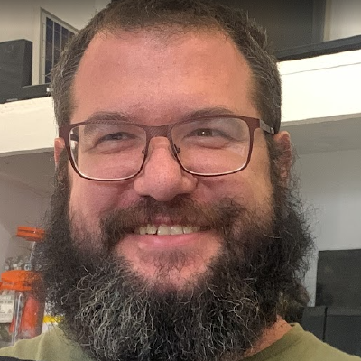

CNC Product and Embedded Systems Engineer
Peter van der Walt
I’m Peter van der Walt, a CNC product and embedded systems engineer with experience at OpenBuilds, Ooznest and Sienci Labs. I develop the electronics, firmware and machine-control systems behind CNC products, from early prototypes and PCB design through testing, production support and customer-facing software.
My work sits between engineering disciplines: I debug hardware, write embedded firmware, integrate motion-control and VFD systems, improve machine reliability, and turn field problems into practical product changes. I also contribute extensively to open-source CNC projects, with much of my technical work and documentation available on GitHub.